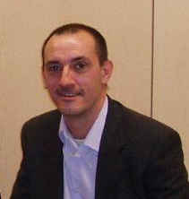
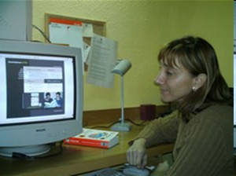
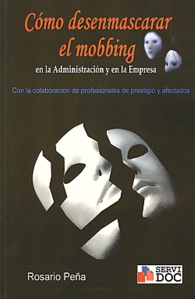
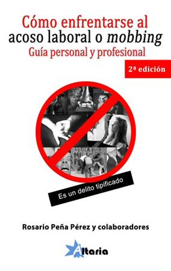

Assetjament: som víctimes?
L'Assemblea General de les Nacions Unides, en una resolució adoptada en un annex a la declaració dels principis fonamentals de justícia relatius a les víctimes de la criminalitat i a les víctimes d'abús de poder, defineix a aquestes últimes de la forma següent:
"S'entén per víctimes a les persones que, individualment o col·lectivament, han patit un perjudici, especialment un atemptat contra la seva integritat física o mental, un patiment moral, una pèrdua material, o bé un atemptat greu contra els seus drets fonamentals, amb motiu d'actes o d'omissions que encara no constitueixen una violació de la legislació penal nacional, però que representen violacions de les normes internacionalment reconegudes en matèria de drets humans".
Consells del nostre psicòleg
"Si lluites pots perdre. Si no lluites, estàs perdut"
Josep Puig. Psicòleg i perit forense d'AVALC
Un consell molt important
M'agradaria donar-vos un consell que no heu d'oblidar. La persona que ha sofert mobbing, pateix trastorns psicològics, la gravetat dels quals dependrà de la seva intensitat, del temps i d'altres circumstàncies. Podeu estar molt deprimits, amb sentiments de buit, desesperança, pensar que no té solució i que us han "destrossat". Cal, però, recordar el següent: Encara que us trobeu "enfonsats" no us han guanyat.
Únicament us hauran derrotat si aconsegueixen canviar la vostra manera de ser, la vostra manera de pensar i fan que actueu com ells. Per aquest motiu, us recomano que NO CANVIEU LA VOSTRA PERSONALITAT I HAUREU GUANYAT. Un bon començament per tal de "lluitar i guanyar" és informar-se i assessorar-se.
Us encoratjem a continuar lluitant
Passar per una experiència d'assetjament laboral per a la víctima és molt dur, incomprensible, denigrant i podríem afegir un llarg llistat d'adjectius. El mateix succeeix quan algú pateix esdeveniments traumàtics com accidents de tràfic amb víctimes, violacions, atracaments amb arma, etc.
A l'inici un mateix pensa que això és insuperable, que mai tornarà a ser la mateixa persona. Se sent una persona indefensa. Desconfia de la gent. Es tenen "sensacions estranyes" i apareix la simptomatologia característica, semblant a la que pateixen la majoria de víctimes
Heu de saber que SÍ que pot superar-se. Amb esforç i seguint teràpia per especialistes en aquests temes.
Un fet és demostrable és que una vegada la víctima ha finalitzat la teràpia esdevé més forta i aprèn estratègies que fins al moment desconeixia.
És capaç d'entendre's millor. Ha après a valorar-se i arriba a conèixer millor els seus defectes i virtuts. Aprèn a resoldre millor i més habilitat els problemes. Sobretot sabrà que és patir en aquesta vida però també, i a partir d'aquest moment, sabrà què és viure i gaudir dels moments i dels aspectes que abans ni tan sols es plantejava o que no donava importància.
Amb tot això vull animar-vos a continuar lluitant. No us abandoneu al desconsol. No intenteu canviar (no sou vosaltres qui heu de canviar). Ho heu de fer per vosaltres mateixos que sou qui més us ho mereixeu.
Puc dir-vos amb ironia (espero que em disculpeu), "enhorabona per ser envejables". Això vostre té remei, però les persones assetjadores continuaran tota la seva vida amb enveges, misèries i complexos.
Us encoratjo que acudiu a les associacions. Podeu comprovar que "no tot el món és dolent", que no sou les úniques persones que heu passat per aquesta experiència i que hi ha gent que us escolta i us entén.
Rebeu una salutació cordial i molts ànims.
Entrevista a Rosario Peña
"La Ley sí ampara a la víctima de 'mobbing' pero falta sensibilidad y formación para ponerla en práctica."
Rosario Peña. Escritora y colaboradora de AVALC
Toñi León. diarioDirecto. 29/07/10
"Un delincuente de guante blanco". Esta es una de las definiciones que Rosario Peña recoge en su libro Cómo desenmascarar el 'mobbing' en la Administración y en la empresa sobre la figura del acosador. En la obra, la escritora reúne los testimonios de expertos y profesionales que ayudan a las víctimas del acoso laboral a superar tan traumática experiencia, que deja secuelas de por vida.
Y es que por desgracia, 'mobbing' es un término cada vez más conocido en el entorno laboral, y aunque no hay cifras oficiales es en la Administración pública la que registra más casos, según asegura Peña.
Para combatir esta lacra, la escritora sí considera que la Ley ampara al trabajador acosado aunque cree que falta sensibilidad y formación suficiente para ponerla en práctica.
Así considera que la Administración cuenta con excelentes protocolos de prevención de riesgos laborales, aunque no se "ponen en práctica" y "dejan a la víctima totalmente sola y aislada", puntualiza Peña.
Finalmente, la escritora advierte que sin el apoyo del entorno al acosador, "sin estos testigos mudos", el 'mobbing' "jamás existiría", pero la sociedad tiende a apoyar al que "sabemos que es el ganador seguro y no será nunca la víctima", lamenta.
-
diarioDirecto: Su libro tiene un titulo claro y contundente: 'Cómo desenmascarar el 'mobbing' en la Administración y en la empresa', ¿cómo se detecta?
-
Respuesta: Se detecta cuando se ve con claridad -o lo hacen ver los especialistas que la tratan- que no es ningún defecto o problema de la víctima, sino que proviene de conductas hostiles externas.
Cuando se consigue superar, cuando la víctima se sienta segura y vea que ya nada la afectará si no quiere, es cuando se puede estudiar al cobarde -fuera ya de su alcance-. Si lo hacemos de buena fe y en el momento oportuno, sin ánimo de dañar, sino sólo con el fin de destapar su máscara, podrá ser muy interesante. Pero sólo si se hace con espíritu deportivo y noble, como un arte marcial, tendremos el reconocimiento del entorno y el más exigente: el nuestro.
No podemos caer en la venganza porque entonces es cuando habremos dejado de ser nosotros mismos; tenemos que seguir siendo nobles, sinceros, íntegros; no reaccionaremos como ellos jamás; de lo contrario, ese halo mágico que nos cubre, desaparecerá y todos verán nuestra vergonzosa desnudez, exenta de fortaleza.
-
dD: ¿Cuándo se puede decir que un trabajador sufre algún tipo de acoso en su empresa? Es decir, ¿cuál es la línea entre el acoso y situaciones de presión o estrés?
-
R: No es acoso laboral:
- Un enfrentamiento puntual con el jefe por una discusión laboral (roce laboral) o con un compañero por una cuestión laboral o no.
- La antipatía entre jefe y empleado.
- El exceso de carga en el trabajo.
- El desgaste personal por exceso de trabajo (se conoce como burn-out).
- El acoso sexual.
Es acoso laboral:
- La presión laboral que pretende la autoeliminación del trabajador, marchando de la empresa o a través de una baja médica.
- Hacer el vacío a la víctima (risas, darse la vuelta, miradas son una fuerte forma de presión). El grupo acosador sabe que no resistirá psicológicamente y se marchará "aparentemente de manera voluntaria" de la empresa. Hacer el vacío a una persona que es sociable por naturaleza es una de las formas más graves de debilitar a cualquier ser humano que necesita de los demás para convivir. Esto ocurre en el mobbing horizontal. En el mobbing descendente es más difícil porque el hostigamiento del jefe no suele provocar el vacío precisamente (broncas, rigidez injustificada, órdenes mal dadas, etc.)
- Acosado y acosador tienen un vínculo laboral.
- La presión se ha de realizar en el lugar de trabajo.
- Que sea tendencioso, es decir, que la finalidad sea hacer daño. Dañar la salud psicológica de un trabajador es tendencioso.
- Que el hostigamiento se prolongue en el tiempo (algunos manuales hablan de seis meses seguidos como suficiente).
Hay un elemento común como objetivo: Lo que se busca en todos los casos es que el acosado abandone su puesto.
-
dD: ¿Qué se debe hacer ante una situación de 'mobbing'? ¿A dónde hay que dirigirse?
-
R: Se debe denunciar ante el representante de los trabajadores o comité de la empresa; el Servicio de Prevención de Riesgos Laborales; el órgano de personal; el director o jefe superior o ante el Defensor del Pueblo (Síndic de Greuges en Cataluña o Ararteko en el País Vasco). Realmente, no tienen excesiva fuerza real, pero toda la ayuda es poca y servirán para hacer presión en tu favor.
-
dD: ¿Cuál es el perfil del trabajador que sufre acoso laboral en España? ¿Se podría decir algún sector o actividad en el que el 'mobbing' se dé más?
-
R: En cuanto al perfil hay que distinguir entre dos tipos.
Tipo I:
- Íntegras, estables y con alto sentido de la justicia.
- Autónomas y con elevado nivel de iniciativa propia.
- Notable capacidad de trabajo.
- Carismática y con capacidad de liderazgo.
- Elevada empatía.
Tipo II:
- Moderadamente inseguras, ingenuas y complacientes.
- Con dificultad para expresar emociones.
- Introvertidas y tímidas.
- Se someten porque no toleran la inseguridad que genera el conflicto.
- Prudentes constantes, trabajadores, pero con falta de confianza personal.
En cuanto a la segunda pregunta, sin lugar a dudas y en contra de lo que aparentemente pueda parecer, se da mayoritariamente en la Administración pública. Las características son:
- Alta competitividad social.
- Mala organización de trabajo.
- Indefinición de funciones.
- Ausencia de métodos eficlaces para resolver conflictos.
- El grupo suele escurrir el bulto y negar encubiertamente la ayuda a la víctima.
-
dD: El perfil del acosador, ¿cuál es?
-
R: Un hostigador es un ser mediocre, un trepa, un incompetente, un lobo con piel de cordero. Es una persona infeliz, pues nadie satisfecho con su vida se dedicaría a hacer daño a nadie .Es un egoísta. Los demás sólo le interesan para lograr sus objetivos. Javier Ignacio Prieto, abogado que colabora en el libro, califica al acosador como "un delincuente de guante blanco " y Josep Puig, psicólogo clínico que trata habitualmente con víctimas de 'mobbing', dice que son "verdaderos asesinos que matan en silencio y con total impunidad".
Además no hay que olvidar el apoyo del entorno al acosador. Esos testigos mudos que piensan que con ellos no va, que miran hacia otro lado cuando ven una denigración o una conducta hostil, incluso apoyan y actúan junto al que creen será el ganador seguro: el acosador. Si esos testigos mudos no existieran, no existiría jamás el acoso.
-
dD: ¿En qué medida afecta a la productividad de un trabajador ser víctima de acoso laboral?
-
R: El 'mobbing' no es un juego patológico con resultado cero en el que el fracaso de uno permite la victoria del otro. Al contrario, aquí pierden todos: la víctima en primer lugar (por las consecuencias tan negativas para su salud) pero también la empresa, ya que el clima de tensión lleva a una caída generalizada en el rendimiento.
Cuando el acosado no cuenta con estrategias de afrontamiento eficaces y no hay apoyo social o es muy escaso, incluso si lo hay, pero no es efectivo, perderá totalmente la salud.
La Administración pública es la que registra más casos de acoso laboral, según explica Peña
-
dD: Al igual que ocurre con víctimas de otras agresiones, ¿sufrir 'mobbing' puede dejar secuelas de por vida?
-
R: Sí, fobias, excesiva desconfianza en los demás, mareos, problemas de tics nervioso, lapsus de memoria, etc. En fin, como bien dice en mi libro Joaquim Vilargunter, presidente de la asociación contra el mobbing en Cataluña AVALC, www.avalc.es, las secuelas dependerán de la edad de la víctima, de la intensidad del acoso y del apoyo del entorno más cercano.
-
dD: En su libro se ha rodeado de expertos como son jueces, abogados, catedráticos, psiquiatras, psicólogos… éstos últimos ¿qué consejos dan?
-
R: Que la víctima debe ir con la cabeza muy alta, no hizo nada malo, no debe callarlo, los que deben sentir vergüenza de sus actos son los acosadores y, este libro y esta entrevista y todo lo que se pueda hacer para divulgar el tema, debe servir para que las víctimas se atrevan a denunciarlo. Todo el mundo debe ser tratado con dignidad, sea cual sea su origen, raza, creencias, estilo de vida, etc.
-
dD: Con la crisis, ¿se detectan más casos de acoso?
-
R: En la empresa privada, ante el miedo a ser echados, hay muchos "pelotas " con ganas de pisar y se aguanta lo indecible, pero en la empresa pública éste no es el caso.
-
dD: ¿Cree que las empresas y la Administración están preparadas para gestionar este tipo de casos?
-
R: En la Administración tienen excelentes protocolos de prevención de riesgos laborales. El problema es que no se ponen en práctica y dejan a la víctima totalmente sola y aislada. En la empresa privada, aún están más lejos.
-
dD: ¿Cuál debería ser el rol de los sindicatos en esta materia?
-
R: El "debería " de su pregunta ya dice que no lo hace aún. Los sindicatos, hoy por hoy, se limitan a aconsejar a la víctima que recurra al servicio jurídico que será un poco más asequible y poco más.
Deberían luchar junto a la víctima. Los que realmente luchan son las asociaciones, creo que no están suficientemente reconocidas y en realidad son las únicas que de verdad apoyan y ayudan a las víctimas, haciéndole ver que su caso no es único y aconsejando todo tipo de salidas, terapéuticas, de mediación y jurídicas, si es necesario.
-
dD: Como experta en este tema, ¿cuántos casos cree que se denuncian y cuántos quedan ocultos por el temor al trabajador a perder su empleo?
-
R: Yo no soy experta en absoluto, expertos son los colaboradores que han participado en el libro. Soy una víctima que ha pasado por todas las etapas posibles, eso sí.
Por miedo, no se denuncian muchos casos de maltrato laboral. En la Administración, se pide traslado o se piden bajas largas que acaban en incapacidad permanente total o absoluta por la pérdida de salud.
Por desgracia, la gran mayoría de casos quedan ocultos. Mi consejo es que se denuncie, si la salud lo permite. Se gana, aunque sólo sea en dignidad.
-
dD: ¿Ampara la Ley como debiera a los trabajadores acosados?
-
R: Sí, lo que falta es sensibilidad o incluso "formación suficiente " para ponerla en práctica.
-
dD: ¿Considera que la sociedad es consciente de esta problemática?
-
R: Por desgracia, no. El acoso escolar lo he vivido como profesional de la enseñanza, más de una vez, y todo el mundo se pone de parte de la víctima. En el acoso sexual, lo mismo, pero desgraciadamente, en el acoso laboral, dado que la mayoría de acosadores son personas con poder o incluso, cargos de libre elección, la víctima no tiene la consideración social que debería. Tendemos a apoyar al que sabemos que es el ganador seguro y no será nunca la víctima.
Otras asociaciones de víctimas de acoso
- AECAL: Asociación Española contra el acoso laboral y la violencia en el ámbito familiar
- PRIDICAM: mobbing Madrid
- ABECAM mobbing: Asociación Benidorm y Comarca para el apoyo contra el mobbing
- ANAMIB: Asociación de Ayuda por Acoso Moral en el Trabajo
- IGNIS: Asociación Ignis (Zaragoza)
- AMAYA: Asociación contra el maltrato y el acoso psicológico AMAYA
- ASAM: Asociación Alto al mobbing (Cataluña)
- AGACAM: Asociación Gallega Contra el Acoso Moral
- Hirigoyen: Asociación Contra el Acoso Moral en el Trabajo
- Adepal: Asociación para la Defensa de los Empleados Publicos contra el Acoso Laboral
Más recursos
- mobbing.NU: Organizaciones - España
- Open Hearts: Recursos contra el mobbing o acoso laboral
- avase - Asociación Valenciana del Secretariado: Legislación sobre mobbing en la UE
Libros
-
Título: Cómo enfrentarse al acoso laboral o mobbing: guía personal y profesional.
Autor: Rosario Peña y colaboradores.
Editorial: Altaria publicaciones
Fecha: 2014
Edición: 2ª edición
-

Título: Cómo desenmascarar el mobbing en la administración y en la empresa
Autor: Rosario Peña y colaboradores.
Editorial: Altaria publicaciones
Fecha: Fecha: 16 diciembre 2010
Edición: -